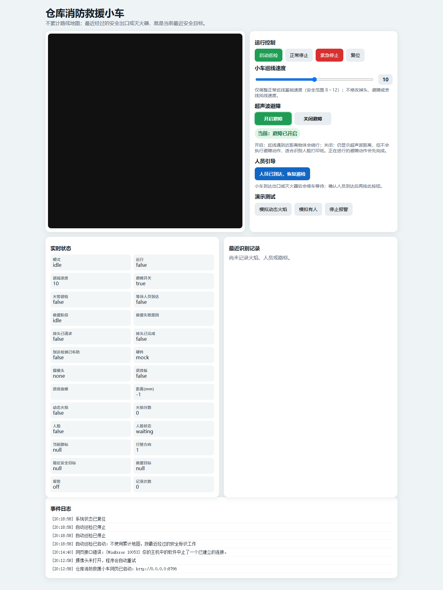

Fire Rescue Car
仓库消防救援巡检小车
基于 Raspberry Pi 与 Yahboom Raspbot，将红外巡线、超声波避障、摄像头识别和语音提示组合成可从浏览器操作的巡检与人员引导系统。
Raspberry Pi fire patrol robot with line following, obstacle avoidance, visual detection and a web dashboard.

亮点
- 动态火焰检测，减少静态图片误触发
- 人脸、安全出口、灭火器与方向标识识别
- 到达安全出口后的人员引导流程
- 支持无硬件的模拟模式